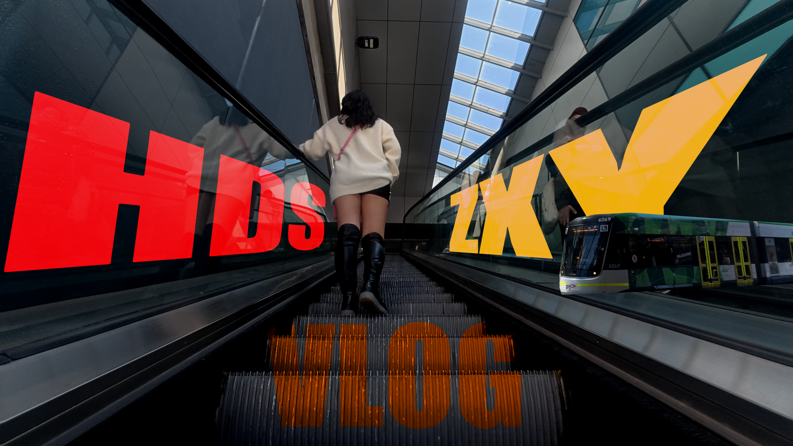
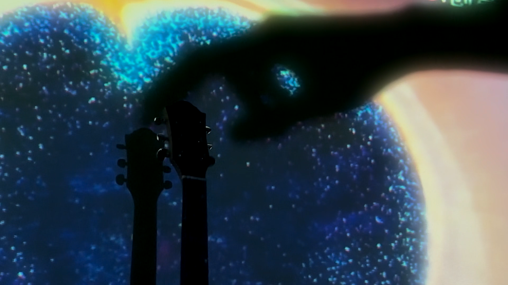
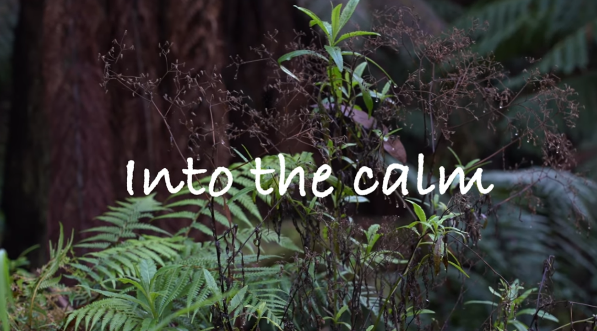
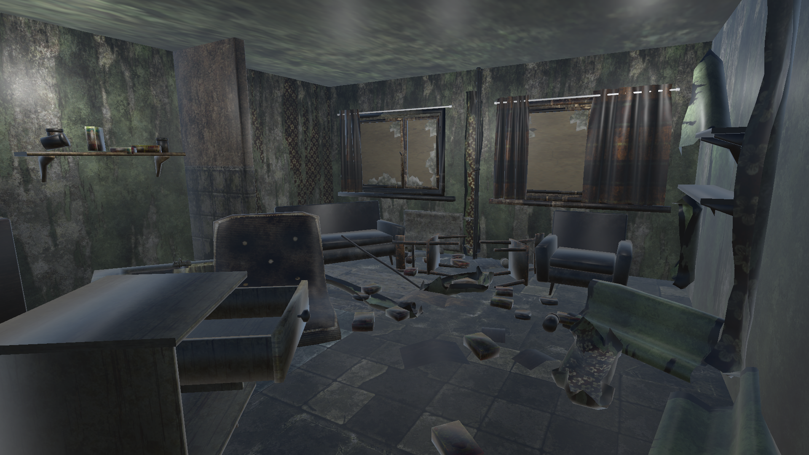
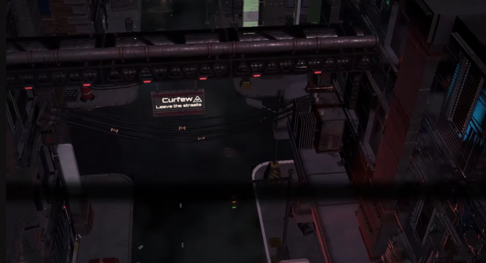

Video Editing
I focus on timing, transitions, and visual pacing to create engaging screen-based narratives.
Portfolio Website
Video Editing & 3D Visual Work
A minimalist portfolio by Junxi Guo, focused on visual storytelling, editing rhythm, and developing 3D creative practice.
Scroll
Featured Works
A selected showcase of video editing, 3D environment work, and digital media projects.

PERSONAL VLOG
A personal vlog project exploring everyday moments through cinematic editing, pacing, and visual storytelling. Focused on capturing atmosphere and creating an engaging viewing experience.

Minimalist Modeling
From the users perspective, this is a continuous experience. Outside, the space is open and neutral. At the entrance, space compresses and light dims, creating tension and focus. Inside, the environment is enclosed and simplified, directing attention to the center. The user is not just observing, but being guided by the space.

digital video project
A group project for a digital video that focuses on visual effects and original music, setting aside narrative elements to allow viewers to fully immerse themselves in the experience.
Creative Direction
My work combines video editing and 3D practice to create visual experiences with clarity, rhythm, and atmosphere.
I focus on timing, transitions, and visual pacing to create engaging screen-based narratives.
I use 3D tools to experiment with composition, lighting, and digital form in visual media production.
HDS Studio represents my developing professional identity in digital media and portfolio-based creative work.
Selected Projects

Video
An immersive short film about hiking in nature focused on rhythm, transitions, and visual storytelling in a immersive way.

3D Environment
A 3D environment project exploring abandoned interior spaces through lighting, composition, and atmospheric storytelling.

Video
A short commercial that combines animation and video editing, aimed at putting an end to cyberbullying and prompting viewers to reflect
Profile
I am a digital media student with a strong interest in video production and 3D modeling. I enjoy creating visual content that combines creativity and technical skills to engage audiences. Through my studies, I have developed experience in video editing and basic 3D modeling, using tools such as Adobe Premiere Pro, After Effects, and Blender. I am particularly interested in storytelling through visual media and exploring how digital content can enhance user experience. I am currently building my portfolio and looking for opportunities to gain experience in video production, editing, or VFX-related roles.
Through academic and personal projects, I am building a portfolio that reflects both technical growth and a developing creative identity.
Contact
For portfolio viewing, collaboration, or further information, please contact me through the details below.